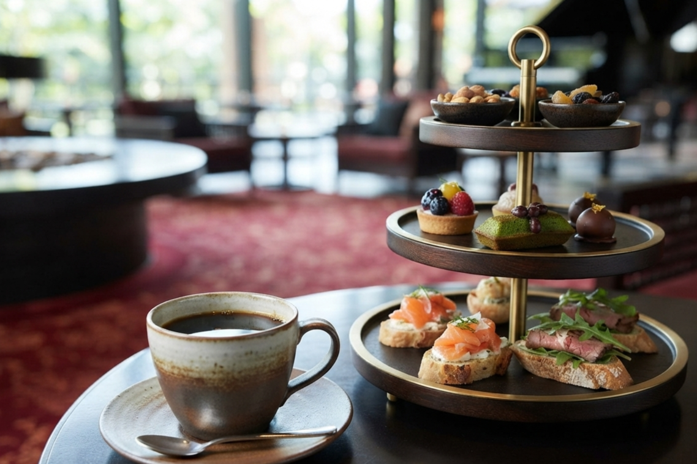
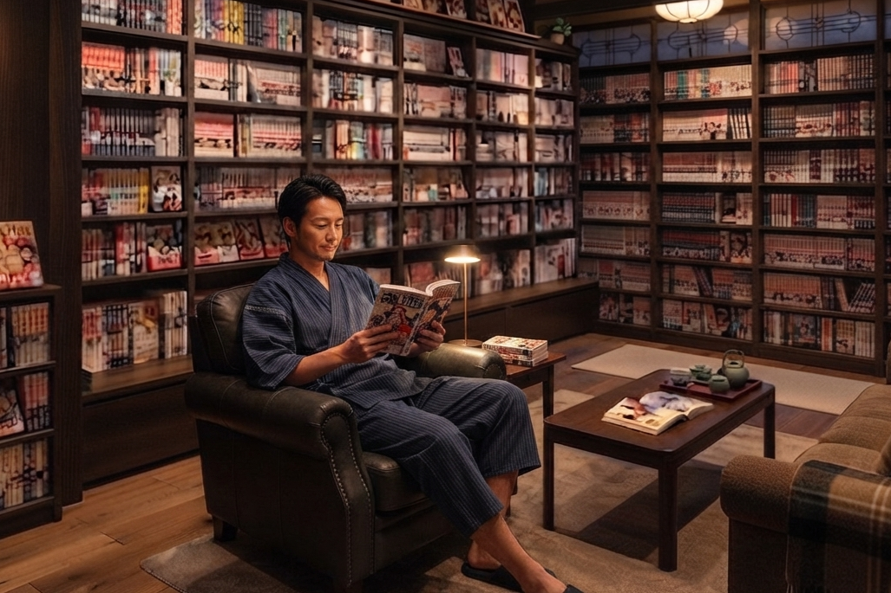
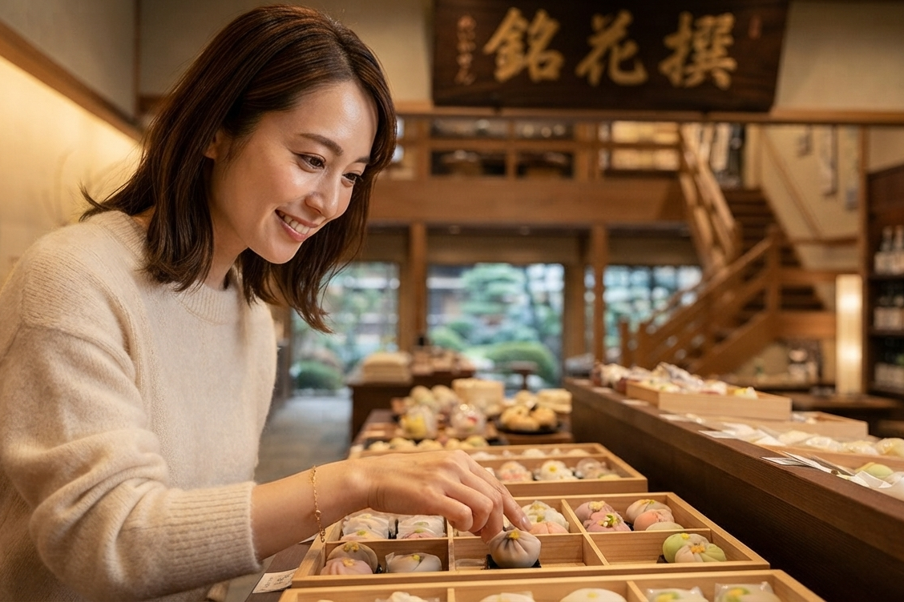

過ごし方
stay guide
24 HOURS STAY
時間に追われない、
24時間の温泉旅。
チェックインからチェックアウトまで、
すべてが自由時間。
24時間という、 もうひとつの贅沢。
朝風呂を楽しみ、 ラウンジで語らい、 湯あかり横丁で遊び、 夜は貸切風呂へ。 時間を気にせず、 思い思いの一日をお過ごしください。

旅の始まり
チェックイン後は火のラウンジでウェルカムドリンクと軽めのランチを。 色浴衣やアメニティを選びお部屋へ。(お部屋は13時からご利用いただけます)

大浴場で汗を流す
お部屋でひと息ついたら、まずは大浴場へ。 お風呂上りはラウンジで湯上りドリンクやアイスを。

館内温泉街で遊ぶ
館内の「湯あかり横丁」へ。スマートボールや射的、 カラオケやコインゲームなどを楽しみます。疲れたら土のラウンジで休憩を。

夕食の時間
旬の食材をふんだんに使った、がしみや荘自慢の会席料理を。 個室のお食事処で、ゆっくりとお楽しみください。

ショーやイベントを観る
演劇場で大衆演劇や和太鼓ショーなど開催しています。 臨場感のあるショーは見ごたえ抜群です。

夜を楽しむ
夜だけオープンするバーでオリジナルカクテルを。 小腹が空いたら屋台で夜泣きラーメンもお召し上がりいただけます。

貸切風呂でのんびり
館内の貸切風呂で一日の疲れを癒しましょう。 24時間入れるので、深夜でも湯巡りができます。

深夜でも退屈しない
眠れない時は、月のラウンジでお酒を飲みなおしたり、 図書室で読書をしたり。深夜でも楽しめる施設がたくさんございます。

朝の庭園
静かな空気の中、 庭園をゆっくり散歩。 滝や桜などの景勝を見たり、湯巡りを楽しんだり自由にお過ごしください。

朝食ビュッフェ
朝食はビュッフェ形式です。好きなものを好きなだけ召し上がってください。 食べ過ぎたら、屋上のジムで腹ごなしを。

旅を終えて
お土産を探したり、ギャラリーで芸術を楽しんだり。 がしみや荘は最後まで楽しめる旅館です。